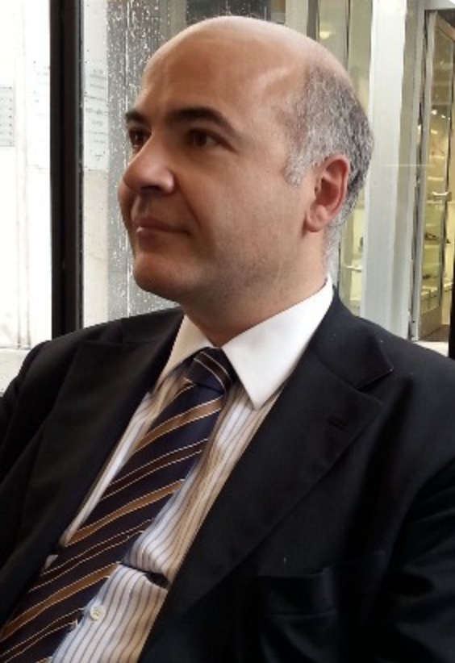

Avvocato
Augusto Cassini
Laureato con 106/110 nel 1995 in diritto dell'esecuzione civile su “L'espropriazione dei beni indivisi”, tesi
discussa con la prof.ssa Annalisa Lorenzetto Peserico.
Mi dedico al diritto civile ed in particolare: diritto di famiglia, delle successioni, dei diritti reali,
delle obbligazioni e dei contratti, del recupero dei crediti e delle procedure esecutive.
Amministratore di sostegno dal 2013.
Iscritto all'Albo Speciale della Cassazione e delle Giurisdizioni Superiori.
Corrispondo in inglese.